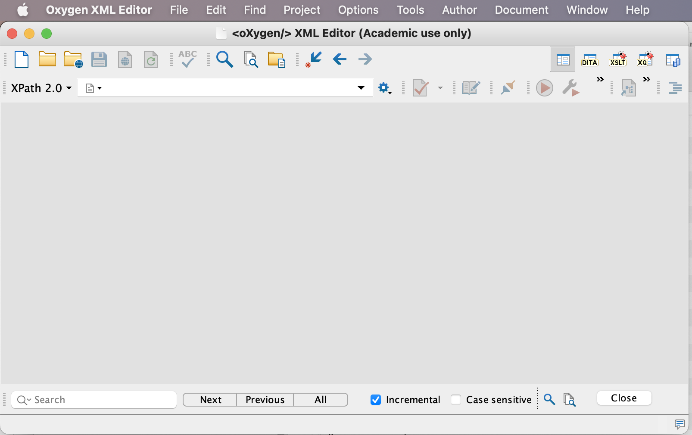
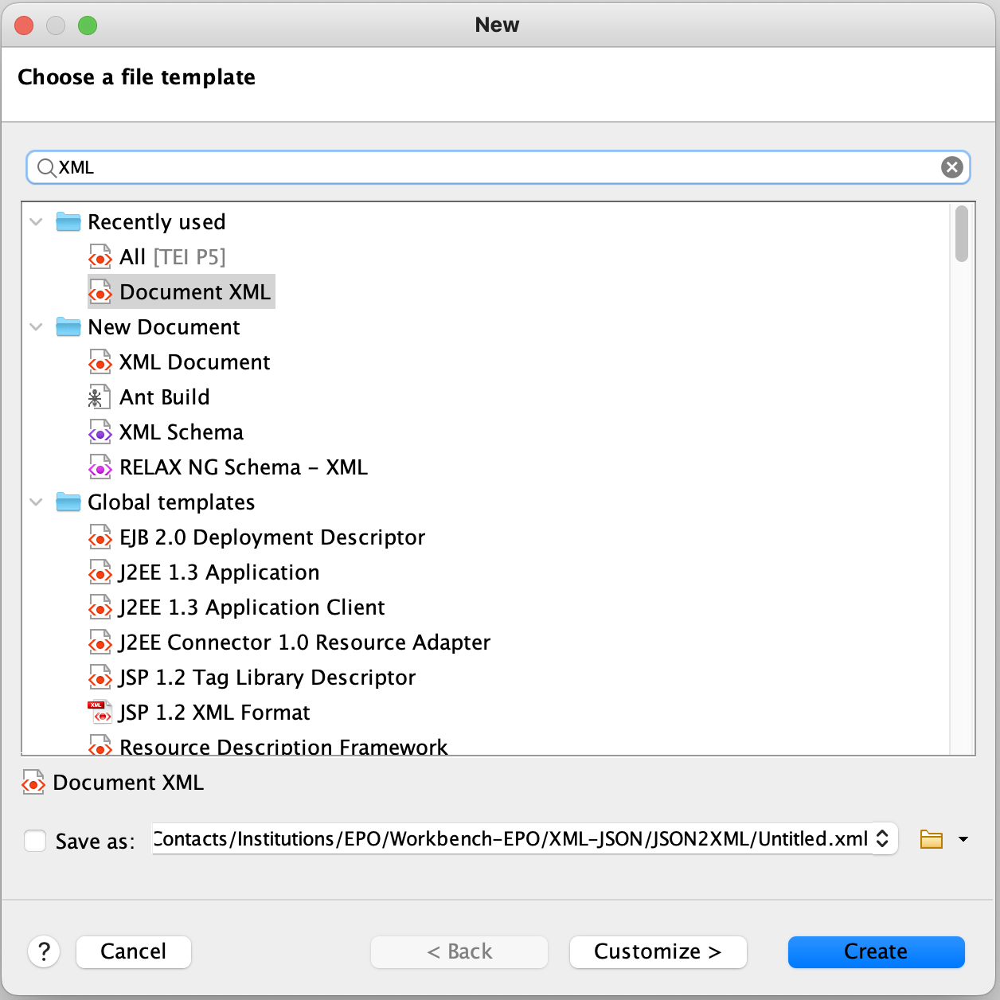

- Open Oxygen XML Editor
Bear Oxygen XML Editor
- Create a new XML document
Dialogue box when opening a new document - XML
 Bear XML document
Bear XML document
2. Basic understanding of an XML document
- Understanding the XML declaration
- The various XML objects:
- Simple element - text content
- Embedded elements - parenthesizing - forbidden constructs
- Empty elements
- Mixed content
- Attributes - simple, double quotes
- Flexibility offered by the XML model: elements can be repeted iteratively, recursively
- Notion of well-formedness
- Notion of namespace:
- Namespace declaration (and usage):
<test:element
xmlns:test="http://myDomainName.org/ns"/>
- Default namespace:
<TEI xmlns="http://www.tei-c.org/ns/1.0"/>
- Namespace usage
<testmyElement/>
- Default namespace usage:
<quote>Demain dès l'aube...</quote>
- Opening a new document => TEI all; looking at the default root element
- Understanding the notion of tree - root element
- Checking Oxygen configuration to track position in XPath
 Setting up Oxygen to track position in XPath
Setting up Oxygen to track position in XPath
- Using a path to filter a document
- The basic axes: child, parent, descendant (or self), ancestor (or self), following
(sibling), preceding (sibling)
- Selecting an attribute